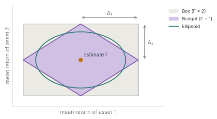

01 · DesignUncertainty models, risk measures and roles are separate arguments
Every formulation the package builds has the following form, written for an allocation \(u\in\mathcal B\) and returns \(\xi\) in the loss convention of Uncertainty and Ambiguity:
Here \(\lambda_k\) are objective weights, and each risk measure \(\rho\) is evaluated over its own set \(\mathcal A\), which can be a single estimated distribution, an ambiguity set, or the point distributions on an uncertainty set. In code, the same problem is stated in terms of returns and maximized. The three objects below fill in \(\mathcal A\), \(\rho\) and the role of each term.
Three objects, each a type
The uncertainty model is any multivariate distribution from Distributions.jl, such as a fitted Gaussian; a finite sample (DeterministicSamples); an uncertainty set (BudgetSet, EllipticalSet); or an ambiguity set (MomentUncertainty, DuWassersteinBall). A risk measure is a type parameterized by its uncertainty model: ExpectedReturn, Variance, SqrtVariance, ConditionalExpectedReturn (the conditional value-at-risk of the loss with its sign reversed) and ExpectedUtility with a concave piecewise-linear utility. The role wraps a risk measure as an ObjectiveTerm with a weight or as a RiskConstraint with a sense and a level, and a ConeRegularizer adds a norm of the allocation as an extra objective term.
Each combination compiles to its tractable reformulation
A worst case over a set is itself an optimization problem, so a robust term cannot be added to a model directly. For each supported combination of measure and set, the package writes the dual of this inner problem into the outer model, adding its auxiliary variables and constraints, and returns an expression equal to the worst case. For the ellipsoid \(\{\mu:\lVert\Sigma^{-1/2}(\mu-\hat r)\rVert_2\le\delta\}\) around an estimated mean \(\hat r\), for instance, the worst-case mean return is
which is one second-order-cone constraint in \(u\). The other combinations follow the same pattern. The budget set of Bertsimas and Sim (2004) yields linear constraints, with the box of Soyster (1973) as the full-budget case. With an expected piecewise-linear utility, the moment ambiguity set of Delage and Ye (2010) leads to semidefinite constraints. The Wasserstein ball around a sample follows Du et al. (2021) and adds a few conic constraints per sample point, for a ground norm chosen by the user. The conditional value-at-risk of a sample is the linear program of Rockafellar and Uryasev (2000); at the extreme tail level it reduces to the worst observed return, the robust constraint over the data-driven polyhedral set of Fernandes et al. (2016). Variance and standard deviation enter as rotated and ordinary second-order cones through a Cholesky factor.
Because each of these pieces is conic, any formulation assembled from them is a single convex conic program, solved by a conic solver available through JuMP such as Clarabel or COSMO.

BudgetSet with full budget \(\Gamma=2\), Soyster's set), the budget set with \(\Gamma=1\) (Bertsimas and Sim), and an ellipsoid (EllipticalSet, Ben-Tal and Nemirovski). A worst-case return over the first two compiles to linear constraints and over the third to one second-order cone. Schematic drawn for this site.A formulation is added to an existing model
The function portfolio_model! adds the terms and constraints of a formulation to a JuMP model in which the allocation variables, the budget, the bounds and any side constraints are already defined, so the feasible set \(\mathcal B\) stays under the user’s control. With record_measures, it also returns a handle to every objective term and risk constraint, whose values can be read after the solve. Inside a backtest, change_bids! performs these steps for the market: It builds the allocation variables and the budget constraint, adds the formulation, solves the model and places the resulting allocation.
Strategies are assessed as rolling decision procedures
The function sequential_backtest_market runs a strategy as a rolling decision procedure. A strategy is a function of the market and the returns observed so far: It estimates the distribution, sizes its sets, builds its formulation and calls change_bids!, using past data only. At each timestamp of the return series, which can be days or seconds, the backtest calls the strategy, clears the market at the realized prices and updates wealth. The market currently available is a VolumeMarket, which implements the market interface of OptimalBids.jl. It represents an allocation as a continuous vector of volumes, the simplification common in asset-management research and simple strategies, which ignores minimum investment amounts, the discrete nature of positions, price impact and derivatives.
Wealth, returns and allocations are recorded at each timestamp. An optimization recorder also stores the value of every risk measure and regularization term in the strategy’s allocation model. For a robust term, the stored value is the worst-case risk that the model promised for the chosen allocation, its certificate in the sense of Uncertainty and Ambiguity, and comparing it with the loss realized afterwards shows whether that promise held. A rule that sizes or updates an ambiguity set can therefore be judged by the out-of-sample performance of the decisions it induces.

02 · ExampleA rolling strategy built from separate terms
The strategy below, assembled from the README and documentation examples, re-estimates a Gaussian distribution on a 60-day window at each step, maximizes expected return with an \(\ell_1\) penalty, and bounds three quantities: the standard deviation, the worst-case mean return over an ellipsoid, and the worst return observed in the window.
using PortfolioOpt, PortfolioOpt.TestUtils
using Clarabel, Distributions
returns = percentchange(get_test_data()) # six assets, daily returns
dates = timestamp(returns)[100:end]
solver = optimizer_with_attributes(Clarabel.Optimizer, "verbose" => false)
records, _ = sequential_backtest_market(VolumeMarketHistory(returns), dates) do market, past, ext
R = values(past)[(end - 60):end, :] # estimation window: past returns only
Σ, r̄ = mean_variance(R)
d = MvNormal(r̄, Σ) # nominal distribution
W = market_budget(market) # current wealth
formulation = PortfolioFormulation(MAX_SENSE,
[ObjectiveTerm(ExpectedReturn(d)),
ObjectiveTerm(ConeRegularizer(MOI.NormOneCone(length(r̄) + 1)), -3e-4)],
[RiskConstraint(SqrtVariance(d), LessThan(0.03 / W)),
RiskConstraint(ExpectedReturn(EllipticalSet(d, 2.0)), GreaterThan(-0.015 / W)),
RiskConstraint(ConditionalExpectedReturn(DeterministicSamples(R'[:, :]); α = 0.0),
GreaterThan(-0.06 / W))],
)
change_bids!(market, formulation, solver)
end
wealth = get_records(records[:wealth])Replacing EllipticalSet(d, 2.0) by BudgetSet(d; Δ, Γ) changes the uncertainty set from an ellipsoid to a budget polytope. Using ExpectedUtility(MomentUncertainty(d, γ1, γ2), PieceWiseUtility()) as the first objective term turns that term into the worst-case expected utility over a moment ambiguity set. Neither change touches the other terms.
03 · ResearchResearch that uses the package
- Uncertainty and Ambiguity. The comparison of conditional and fixed moment ambiguity sets in its Section 05 is a rolling backtest of these formulations on the six-stock test dataset distributed with the package.
04 · CitationHow to cite
The repository has no citation file. Cite the package as below, and cite the methods through the publications listed on Uncertainty and Ambiguity.
@misc{rosemberg_portfolioopt,
author = {Rosemberg, Andrew W.},
title = {{PortfolioOpt.jl}: Portfolio optimization formulations in {JuMP}},
howpublished = {\url{https://github.com/andrewrosemberg/PortfolioOpt.jl}},
note = {Julia package, version 1.0.1}
}References
- A. Ben-Tal, A. Nemirovski. Robust solutions of uncertain linear programs. Operations Research Letters 25(1):1–13, 1999.
- D. Bertsimas, M. Sim. The price of robustness. Operations Research 52(1):35–53, 2004.
- E. Delage, Y. Ye. Distributionally robust optimization under moment uncertainty with application to data-driven problems. Operations Research 58(3):595–612, 2010.
- N. Du, Y. Liu, Y. Liu. A new data-driven distributionally robust portfolio optimization method based on Wasserstein ambiguity set. IEEE Access 9:3174–3194, 2021.
- B. Fernandes, A. Street, D. Valladão, C. Fernandes. An adaptive robust portfolio optimization model with loss constraints based on data-driven polyhedral uncertainty sets. European Journal of Operational Research 255(3):961–970, 2016.
- H. Markowitz. Portfolio selection. Journal of Finance 7(1):77–91, 1952.
- R. T. Rockafellar, S. Uryasev. Optimization of conditional value-at-risk. Journal of Risk 2:21–42, 2000.
- A. L. Soyster. Convex programming with set-inclusive constraints and applications to inexact linear programming. Operations Research 21(5):1154–1157, 1973.